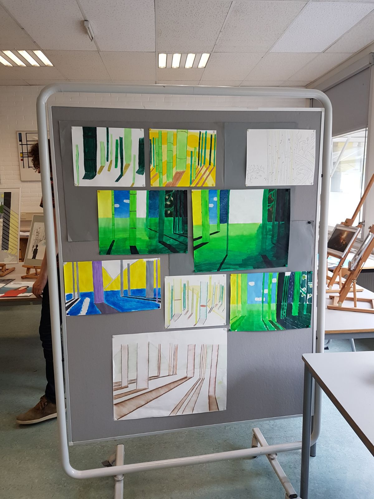
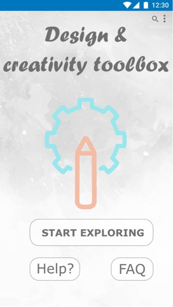
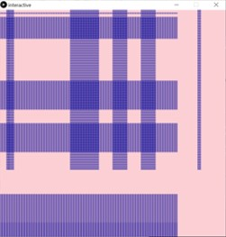
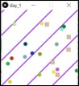
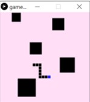

I'm a 21 year old UXD student who loves designing, enjoying chinese food and travelling. My goal is to create beautiful designs but also user friendly designs. Users shouldn't be struggling anymore using applications or designs. As a UXD student I'm learning how to do research for design, the values of design and how to work in an international setting. I think the experience of a user is continously changing, so designs and experiences can always be improved and changed. Currently I'm living in Leiden in a studenthouse together with my roommates. However, I'm studying in the Hague but both cities are located in the working heart of the Netherlands.
Furthermore, I consider myself a really open and kind-hearted person, I love spending time with my family and friends. In my spare time I like to go to the gym or to run in the park. By the way, my favorite color is purple, as you perhaps already have noticed.
Communicative, problem-solving and hard-working are my soft skills. I'm very communicative because I have been raised in two different cultures. My Dutch culture and my Indonesian culture, my father is Dutch and my mother is Indonesian. Dutch people are direct and hard-working, while Indonesian people are kind and value interpersonal relationships.
I'm bilingual, my native language is Dutch but because I have followed bilingual education, I learned to speak English fluently. Also, I can speak some Chinese and Spanish. Furthermore, I have some experience creating designs using Figma, Adobe XD, Processing, HTML5 and CSS.
Augustus 2017- May 2018
I worked as a waitress to learn communicative and hard working skills. Working in a restaurant is in the beginning very challenging because you have to think about so many things. Also, you always have to stay friendly to your guests in chaotic times.
May 2016- March 2017
I worked at the customer service and I was a cashier. This international company has learned me a lot about team-work and building a huge company from scratch. Decathlon just opened their doors in the city Arnhem, when I started working there. We had to start working at different locations until the building was finished.
2013- 2019
For the past couple of years I have done multiple volunteer work. During high school I started volunteering at a retirement home and at my hockey club. Later I volunteered at an organization called Bangsa Dunia (means "people of the world" in Indonesian) who organizes activities for elderly Indonesian people. My mom is one of the founders of this organization and this inspired me to help too!
At Lorentz Lyceum in Arnhem I finished my VWO diploma. Also, I followed bilingual education so all my classes were in English.
I studied for one year the bachelor Chinastudies. The bachelor existed of learning the history, culture, language and politics of ancient and current China.
I'm currently studying User Experience Design (UXD) at The Hague University of Applied Sciences (THUAS).
- HSK exams
From my first year I have had Chinese lessons as an extra course. Every year I participated in a HSK exam. This exam included, listening, writing, reading and speaking.
- Cambridge exam
Due to following bilingual education I participated in the Cambridge exam. This exam existed of listening, reading, writing and speaking.
Click the button below to see my complete CV.
For the course Bespoke Design I had to create a card personalization tool. With this tool the giver could personalize a card, using all your senses. Curious? Click here.
For my art's graduation I had to create drawings that showed depth and shadow. These drawings have been made over a few days and are seen as a forrest.
For the course Design & Creativity, I had to create a digital toolbox to store all the learned techniques. Click on "start exploring" to find out!
In my first year I followed an intense bootcamp learning how to visualize with processing. With processing I learned how to visualize designs and how to create mini games and infinite visuals.
  Do you want to get to know me better or get in touch? Click on the links below!
Or the old fashioned way, give me a call on number +31 636164465